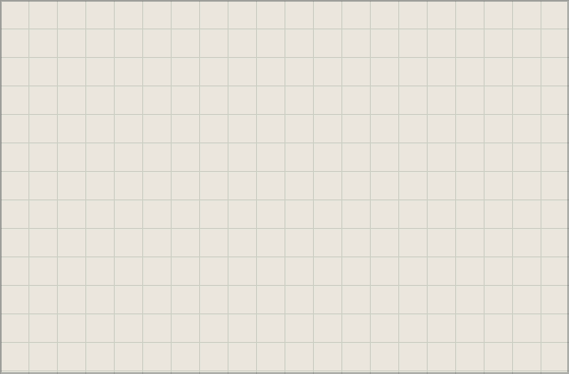

Daily Sketch

Campbell River Laboratory · Model AJ-02
Layered machine scene scaffold with placeholder art layers. Use the hotspot buttons to jump directly to each module section below.
The spiral engine unwound into a touch-first strip.
Tap the sketch plate to open today's note.
Main projects drawer for builds and experiments.
Conveyor module with inline checklist drawer.
Signal station with top stories drawer.
Agenda station with inline upcoming events.
Contact drawer for destinations and channels.
Latest sketch entry appears here as live HTML content.
Current builds, experiments, and active notes.
Task list remains available as plain HTML for no-script and reduced-motion use.
Top signal stories and categories will render here.
Upcoming agenda entries, schedule summary, and next event details.
Contact channels and social destinations.